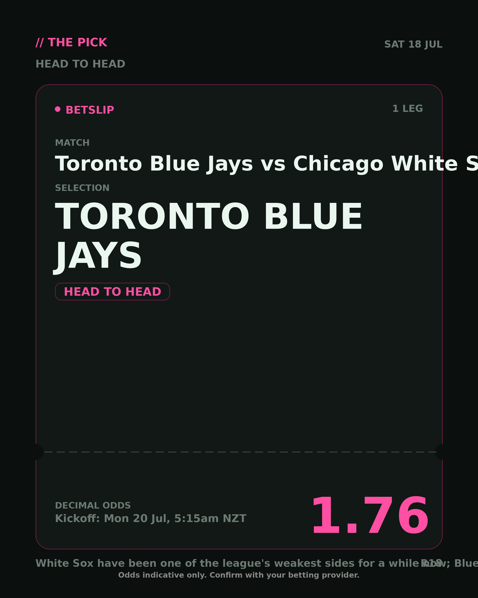
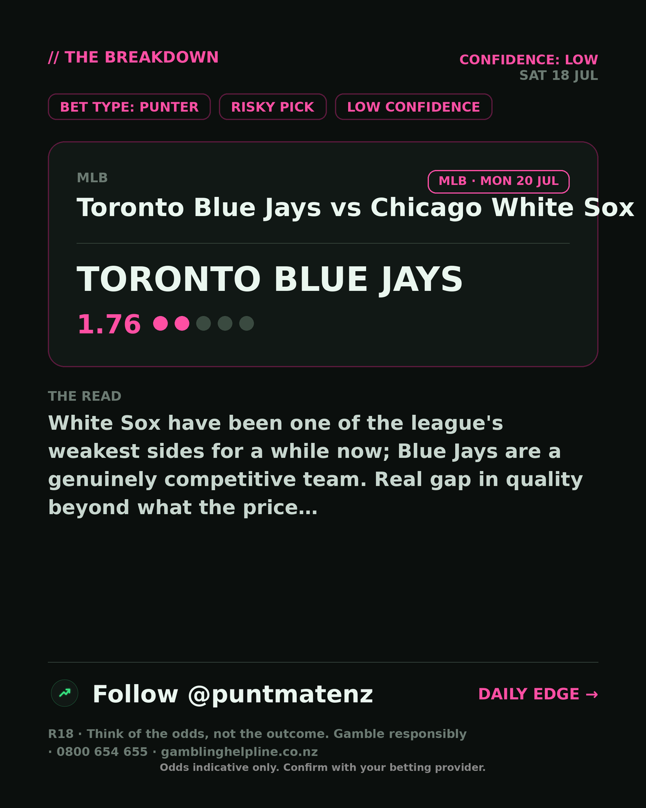

*🎯 PUNTMATE NZ — MLB* 🏟 Toronto Blue Jays vs Chicago White Sox *PICK:* TORONTO BLUE JAYS *ODDS:* 1.76 (Head to Head) *BET TYPE: PUNTER* _White Sox have been one of the league's weakest sides for a while now; Blue Jays are a genuinely competitive team. Real gap in quality beyond what the price…_ ────────────────── 📲 Join Telegram for daily picks R18 · Gamble responsibly · Problem Gambling Foundation NZ: 0800 664 262
🎯 MLB — Toronto Blue Jays vs Chicago White Sox TORONTO BLUE JAYS @ 1.76 (Head to Head) BET TYPE: PUNTER Solid touch here. Not a lock, but the value's real and the form backs it up. White Sox have been one of the league's weakest sides for a while now; Blue Jays are a genuinely competitive team. Real gap in quality beyond what the price… Follow for daily value picks → @puntmatenz Problem Gambling Foundation NZ: 0800 664 262 #PuntmateNZ #SportsBetting #NZTAB #MLB
| has_pick | True |
| pick_id | 2026-07-19_Toronto_Blue_Jays_vs_Chicago_White_Sox_dryrun |
| run_id | sunday-mlb-multi-v2 |
| generated_at | 2026-07-18T10:11:06.035800+00:00 |
| post_date | 2026-07-19 |
| match | Toronto Blue Jays vs Chicago White Sox |
| sport | baseball_mlb |
| sport_label | MLB |
| market | Head to Head |
| selection | TORONTO BLUE JAYS |
| odds | 1.76 |
| bet_type | PUNTER_BET |
| bet_type_label | BET TYPE: PUNTER |
| bet_type_reason | Solid touch here. Not a lock, but the value's real and the form backs it up. White Sox have been one of the league's weakest sides for a while now; Blue Jays are a genuinely competitive team. Real gap in quality beyond what the price… |
| classification | RISKY_PICK |
| risk | RISKY_PICK |
| confidence | LOW |
| confidence_label | LOW |
| final_explanation | White Sox have been one of the league's weakest sides for a while now; Blue Jays are a genuinely competitive team. Real gap in quality beyond what the price… |
| public_caution | Keep this one light — the value's there but so is the uncertainty. |
| theme | night |
| carousel_paths | ['data/review/2026-07-19_Toronto_Blue_Jays_vs_Chicago_White_Sox_dryrun/cover.png', 'data/review/2026-07-19_Toronto_Blue_Jays_vs_Chicago_White_Sox_dryrun/tip.png', 'data/review/2026-07-19_Toronto_Blue_Jays_vs_Chicago_White_Sox_dryrun/breakdown.png'] |
| carousel_urls | ['https://raw.githubusercontent.com/kingofthecastle24/puntmate/main/data/cards/2026-07-19_Toronto_Blue_Jays_vs_Chicago_White_Sox_night_1_cover.png', 'https://raw.githubusercontent.com/kingofthecastle24/puntmate/main/data/cards/2026-07-19_Toronto_Blue_Jays_vs_Chicago_White_Sox_night_2_tip.png', 'https://raw.githubusercontent.com/kingofthecastle24/puntmate/main/data/cards/2026-07-19_Toronto_Blue_Jays_vs_Chicago_White_Sox_night_3_breakdown.png'] |
| story_path | None |
| story_url | None |
| intended_platforms | ['telegram', 'instagram_feed', 'facebook'] |
| workflow_state | GENERATED |
| has_multi | True |
| multi_promo_hint | All 4 legs fall within TAB's 'us team sports' multi-insurance category (4+ legs, e.g. bonus cash back if one leg fails) — check the current live T&Cs/refund amount on tab.co.nz before mentioning this publicly, these rotate. |